역기획서 · 클래시 로얄
클래시로얄 레벨디자인 역기획
고정된 전장의 대칭과 다리 · 강이 만드는 선택, 엘릭서 비용, 공격 · 방어의 분화를 정리하고 전장 변경안을 제안했습니다.

레벨디자인 역기획 · 포트폴리오
클래시로얄
레벨디자인 역기획서
장대규
jdk47888@naver.com · 010-8854-7342
공방 순환과 효율적 자원 활용을 유도하는 클래시로얄 맵 특징
01 / 19
표지입니다. 배경은 실제 전투 화면의 강 · 다리 구간입니다.
목차
전장 → 선택 → 비용 → 공격 · 방어 전략 순서로 분석합니다.
1부
개요
04 — 07
클래시로얄 게임 개요
04
한 판의 구성 요소
05
기본 전장의 구조
06
전장 수치
07
2부
레벨디자인
09 — 19
A
전장이 만드는 선택
대칭 · 다리 · 예외
09 — 11
B
선택의 비용
엘릭서 · 시간
12 — 13
C
공격과 방어의 분화
빌드업 · 유인 · 전진
14 — 16
D
전장 변경 제안
개방 · 총력전 · 정리
17 — 19
목차
02 / 19
1부는 개요, 2부는 레벨디자인입니다. 2부는 A~D 4개 묶음으로 구성됩니다.
1부
개요
게임과 전장의 기본 규칙
— 고정 조건
1부 · 개요
03 / 19
1부 간지입니다. 1부에서는 게임 규칙과 전장 구성 요소를 다룹니다.
클래시로얄 게임 개요
카드로 유닛을 배치해 제한 시간 안에 상대 타워를 더 많이 파괴하는 실시간 대전 게임
| 항목 | 내용 |
|---|---|
| 장르 | 실시간 전략 · 타워 디펜스 · 카드 배틀 |
| 개발 · 출시 | Supercell · 2016년 |
| 플랫폼 | 모바일 (iOS · Android) |
| 핵심 모드 | 1대1 실시간 대전 |
| 경기 시간 | 정규 3분 + 연장 2분 |
| 덱 구성 | 카드 8장 — 한 번에 4장씩 순환 |
| 자원 | 엘릭서 — 최대 10, 2.8초에 1씩 자동 회복 |
| 승리 조건 | 타워를 더 많이 파괴 · 킹 타워 파괴 시 즉시 승리 |
| 전장 | 18 × 32 타일 — 모든 1대1이 같은 전장을 공유 |
분석 대상 선정 근거
- 맵이 1개이므로 지형 변수가 고정됩니다.
- 카드 · 덱이 바뀌어도 전장은 동일합니다.
- 변경 가능 요소가 적으므로 요소 1개 변경의 영향을 분리해 확인할 수 있습니다.
1부 · 개요
04 / 19
게임 기본 규칙을 정리합니다. 분석 대상은 카드 밸런스가 아닙니다. 분석 대상은 모든 경기가 공유하는 전장 1개입니다.
한 판의 구성 요소
왼쪽: 실제 전투 화면 전체. 오른쪽: 같은 화면에서 잘라낸 구성 요소 10개
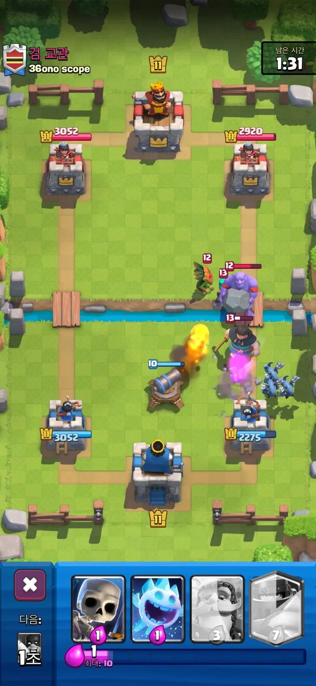
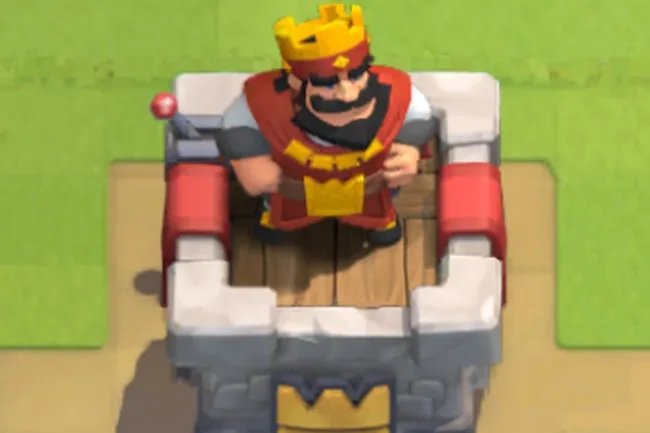
킹 타워
파괴 시 즉시 패배
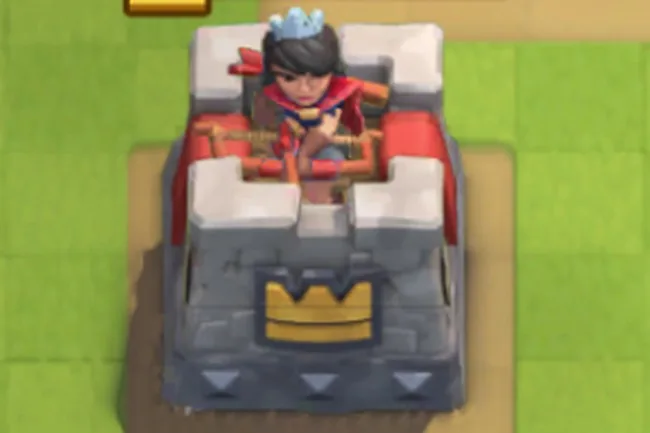
외곽 타워
공격로마다 1개
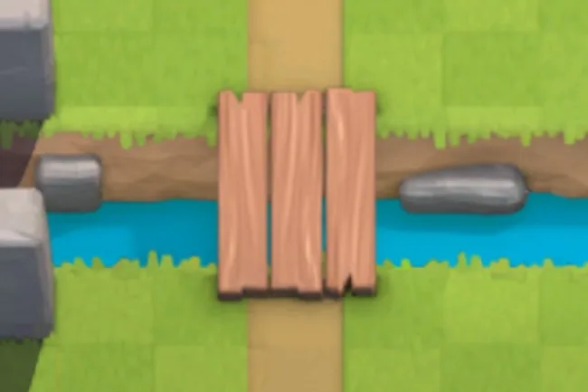
강과 다리
지상 유닛의 유일한 통로
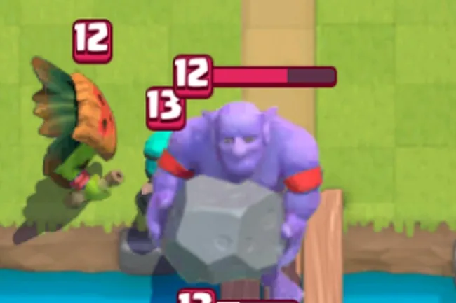
지상 유닛
다리로 우회
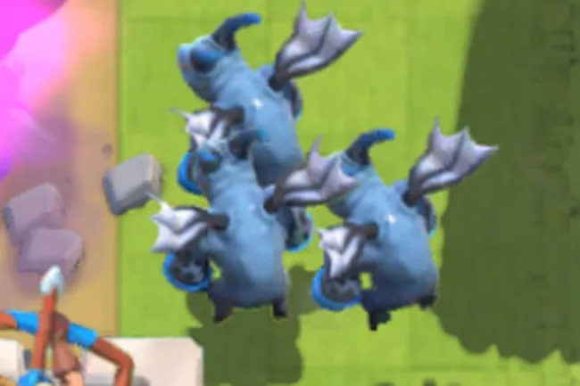
공중 유닛
강을 직접 통과
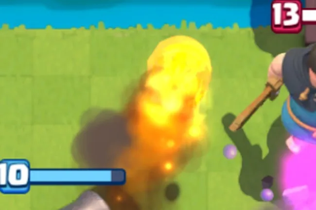
주문
지정 지점에 즉시 작용
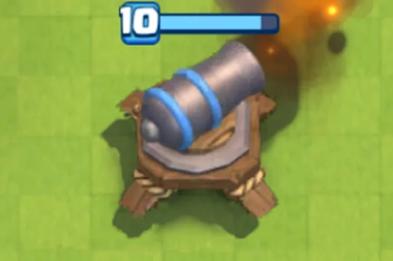
방어 건물
적 유닛 유인
덱 카드
손패 4장 순환
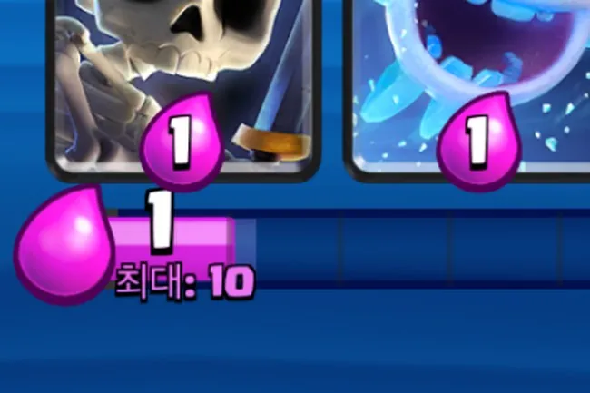
엘릭서
최대 10 · 2.8초에 1
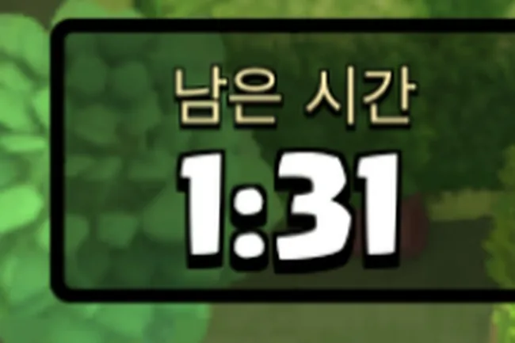
남은 시간
정규 3분 · 연장 2분
1부 · 개요
05 / 19
왼쪽은 실제 전투 화면, 오른쪽은 같은 화면에서 잘라낸 구성 요소 10개입니다. 엘릭서가 1이므로 비용 3 · 7 카드는 회색 잠금 상태입니다.
1부 · 개요
06 / 19
기본 전장의 구조
진영 2개 · 교차 지점 2개 · 진영별 타워 3개가 이동과 배치 조건을 결정합니다.
①
실제 화면
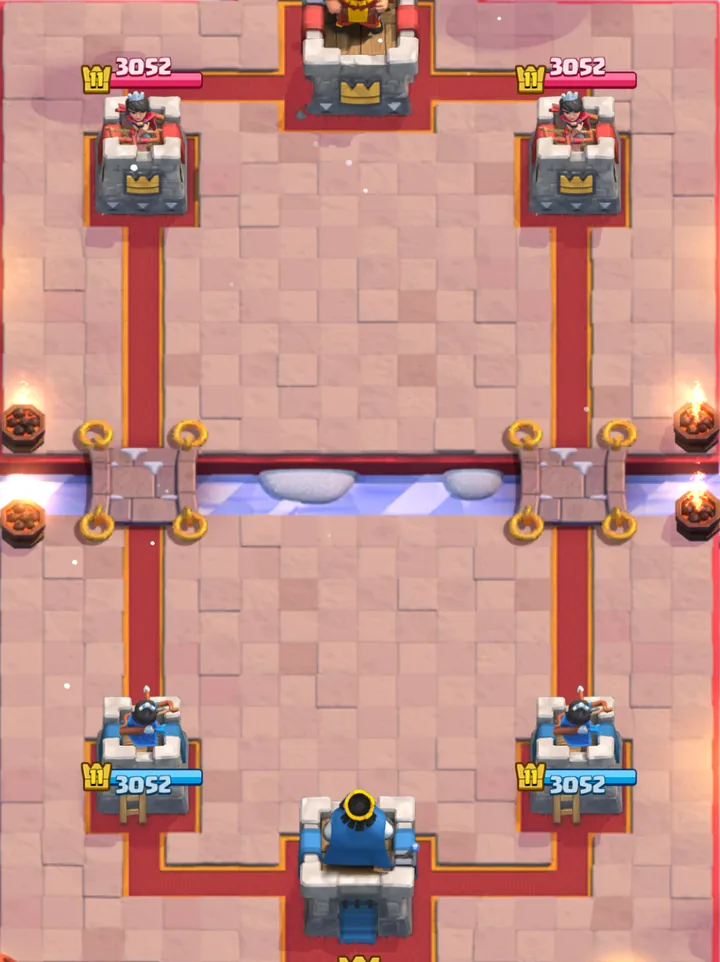
재구성 도식
②
③
④
⑤
⑥
①
강 · 두 진영을 나누는 경계
②
좌우 두 다리 · 지상 유닛의 교차 지점
③
외곽 타워 · 공격로마다 1개
④
킹 타워 · 진영 후방에 1개
⑤
중앙 공간 · 두 공격로가 공유하는 방어 구역
⑥
후방 배치 영역 · 이동 시간 확보 위치
①
승리 조건: 3분 안에 상대 타워 파괴
왼쪽은 실제 전투 화면, 오른쪽은 같은 구조의 재구성 도식입니다. 도식의 타워 위치와 강 · 다리 비율은 이후 모든 장에서 동일하게 사용합니다.
전장 수치
거리 단위는 타일, 자원 단위는 엘릭서, 회복 단위는 초로 고정됩니다.
18타일
32타일
8타일
21타일
격자 1칸 = 1타일
전장
전체 크기
18 × 32 타일
강 폭
2타일
다리
3타일 × 2개
엘릭서
최대 보유량
10
회복 속도
2.8초에 1
2분 경과 후
1.4초에 1
시간
정규 시간
3분
연장 시간
2분
0 → 10 충전
28초
외곽 타워까지 남은 거리
다리 앞에 두면
8타일
진영 뒤에 두면
21타일
같은 카드라도 배치 위치에 따라 이동 거리가 2배 이상 차이 납니다.
이동 거리 차이만큼 엘릭서가 회복되고, 상대는 대응 시간을 얻습니다.
1부 · 개요
07 / 19
전장은 18 × 32 타일, 강은 2타일, 다리는 각 3타일입니다. 배치 위치가 이동 거리를 결정합니다. 이동 거리는 상대가 얻는 대응 시간과 같습니다.
2부
레벨디자인
09 — 19
A
전장이 만드는 선택
대칭 · 다리 · 예외
09 — 11
B
선택의 비용
엘릭서 · 시간
12 — 13
C
공격과 방어의 분화
빌드업 · 유인 · 전진
14 — 16
D
전장 변경 제안
개방 · 총력전 · 정리
17 — 19
2부 · 레벨디자인
08 / 19
2부 간지입니다. 전장 구조를 A~D 4개 묶음으로 나눠 레벨디자인 관점에서 분석합니다.
대칭 구조의 두 가지 효과
상하 대칭은 플레이어 간 공정성을, 좌우 대칭은 조건이 같은 선택지 2개를 만듭니다.
상하 대칭
좌우 대칭
상하 대칭 — 공정성
- 같은 좌표에 배치하면 거리 · 시간이 동일합니다.
- 지형 이점이 있는 진영이 없습니다.
- 승부 요인이 덱과 판단으로 한정됩니다.
좌우 대칭 — 두 개의 선택지
- 두 공격로의 거리와 시간이 같습니다.
- 두 공격로 모두 지형 손해가 없으므로 공격로 선택이 전략 판단이 됩니다.
A
선택지
균형
예외
|
B
비용
시간
|
C
빌드업
유인
전진
|
D
개방
총력전
정리
2부 · A 전장이 만드는 선택
09 / 19
상하 대칭은 시작 조건을 같게 만들어 지형 이득을 없앱니다. 좌우 대칭은 조건이 같은 경로 2개를 만듭니다. 공격로 선택 기준이 지형 판단에서 상대 판단으로 바뀝니다.
다리 2개 설정 근거
교차 지점 개수가 선택 폭과 예측 가능성을 함께 결정합니다.
다리 1개
선택지 없음
다리 2개 — 현재
선택 가능 · 예측 가능
다리 3개
선택지 증가 · 방어 분산
다리 2개: 선택과 예측 최적화
다리 1개는 선택지가 없습니다. 다리 3개는 방어가 분산됩니다.
다리 2개에서만 공격 측은 선택하고, 방어 측은 예측할 수 있습니다.
공격 선택권과 방어 성립이 함께 유지됩니다.
A
선택지
균형
예외
|
B
비용
시간
|
C
빌드업
유인
전진
|
D
개방
총력전
정리
2부 · A 전장이 만드는 선택
10 / 19
다리 1개: 모든 공격이 한 지점으로 모여 방어가 자동으로 성립합니다. 공격이 막힙니다. 다리 3개: 방어가 분산되어 예측이 불가능해집니다. 다리 2개: 선택의 자유와 예측 가능성이 함께 성립합니다. 예외는 공중 유닛과 타워 파괴 후 확장 영역입니다.
강과 다리가 만드는 예측 가능성
두 다리는 지상 유닛 경로만 제한합니다. 공중 유닛은 강을 직접 통과합니다.
지상 — 두 다리로 수렴
호그 라이더 · 로얄 자이언트 · 골렘
공중 — 강 위 직접 통과
미니언 자이언트 · 벌룬
확장 영역 — 상대 진영 배치
외곽 타워 파괴 후 개방
A
선택지
균형
예외
|
B
비용
시간
|
C
빌드업
유인
전진
|
D
개방
총력전
정리
2부 · A 전장이 만드는 선택
11 / 19
지상 유닛은 다리로 수렴하므로 공격 방향이 노출됩니다. 공중 유닛과 확장 영역 배치는 경로 예측을 우회하는 수단 2개입니다.
선택 비용 — 엘릭서
엘릭서 풀 1개를 두 공격로가 공유하므로 모든 배치에 비용이 발생합니다.
한쪽 사용 시 반대쪽 공백
굵은 화살표 상대 공세 / 가는 화살표 내 압박
*엘릭서: 유닛 · 건물 배치에 필요한 자원. 최대 용량 10.
<가용 엘릭서 10>
공격로에 6 소모
공격 사용분
잔여 4
방어 가용분
- 두 공격로가 엘릭서 풀 1개를 공유합니다(최대 용량 10).
- 사용한 엘릭서는 회수할 수 없습니다.
- 반대편 공격로의 유닛 간 간섭은 거의 불가능합니다(유닛 인식 · 사정거리 한계).
- 공격 방향을 고르는 것이 비용 지불입니다.
A
선택지
균형
예외
|
B
비용
시간
|
C
빌드업
유인
전진
|
D
개방
총력전
정리
2부 · B 선택의 비용
12 / 19
6 / 4 배분은 사용한 자원이 한 공격로에만 쓰인다는 점을 보이는 예시입니다. 선택의 자유는 자원 제약이 있을 때만 판단 요소가 됩니다.
엘릭서 · 시간 교환의 두 방향
엘릭서 회복 속도가 고정되어 있으므로 엘릭서 · 시간 교환 방향이 공격과 방어로 나뉩니다.
엘릭서 회복 배율 — 경기 시간별 고정값
×1
0~1분
×1
1~2분
×2
2~3분
×2
연장 3~4분
×3
연장 4~5분
공격
시간
엘릭서
도착까지 걸리는 시간 동안 회복된 엘릭서로 병력 규모를 키웁니다.
방어
엘릭서
시간
적은 엘릭서로 상대 병력을 지연시켜 대응 엘릭서 회복 시간을 확보합니다.
A
선택지
균형
예외
|
B
비용
시간
|
C
빌드업
유인
전진
|
D
개방
총력전
정리
2부 · B 선택의 비용
13 / 19
공격과 방어의 구분 기준을 정리합니다. 두 전략은 같은 교환(엘릭서 ↔ 시간)을 반대 방향으로 수행합니다. 회복 속도가 고정되어 있으므로 교환이 성립합니다. 후반에 회복 속도가 오르면 공격 측 교환의 가치가 커집니다.
공격 — 빌드업 구조
출발 지점과 타워 사이 거리가 병력 집결 시간을 만듭니다.
출발 좌표 비교
실선 후방 · 점선 다리 앞
후방 배치
이동 시간 소요
이동 중 엘릭서 회복
지원 유닛 추가로 공세 강화
상대 진영 진입 · 공격
이동 거리 = 빌드업 시간
후방 배치는 빌드업 시간 확보 수단입니다. 이동 중 회복된 엘릭서로 지원 병력을 배치합니다.
공격 측 계산 항목
- 유닛 이동 속도 — 느린 유닛일수록 먼저 배치
- 도착까지 남은 시간 · 회복될 엘릭서 양
- 빌드업 중 반대편 공격로가 받는 피해
A
선택지
균형
예외
|
B
비용
시간
|
C
빌드업
유인
전진
|
D
개방
총력전
정리
2부 · C 공격과 방어의 분화
14 / 19
공격의 핵심은 이동 시간을 계산해 카드 여러 장을 한 타이밍에 집결시키는 것입니다. 상대도 같은 시간 동안 엘릭서를 회복합니다. 공격 측이 얻는 것은 자원 우위가 아닌 병력 밀도입니다.
방어 — 중앙 배치의 시간 확보 효율
두 공격로가 공유하는 중앙은 같은 엘릭서로 더 긴 지연 시간을 확보하는 위치입니다.
건물 미배치
공격로를 따라 타워로 직진
중앙 유인
경로 연장 · 타워 사격 중첩
건물 1개로 적 경로 변경
중앙 건물은 적은 엘릭서로 상대 대규모 공세를 지연시킵니다. 지연 시간 동안 엘릭서가 회복되어 대응 카드 배치가 가능해집니다.
중앙 화력 중첩
중앙은 외곽 타워 2개와 킹 타워의 사격이 함께 닿는 지점입니다. 추가 엘릭서 없이 타워 화력이 더해지므로 방어 효율이 가장 높습니다.
A
선택지
균형
예외
|
B
비용
시간
|
C
빌드업
유인
전진
|
D
개방
총력전
정리
2부 · C 공격과 방어의 분화
15 / 19
방어의 목적은 대응 엘릭서가 회복될 때까지 시간을 확보하는 것입니다. 중앙은 시간 확보 비용이 가장 낮은 위치입니다. 중앙의 비용 조건이 14쪽 제안의 전제입니다.
타워 파괴 시 배치 영역 변화
타워 파괴 보상은 배치 영역 확장입니다. 동시에 킹 타워가 방어에 참여합니다.
파괴 전
배치 영역: 자기 진영까지
파괴 후
빗금 영역만큼 출발점 전진
출발점 전진
확장 영역에 바로 배치할 수 있습니다. 후방 이동 없이 상대 진영 앞에서 공격을 시작합니다.
내부 방어 강화
외곽 타워 파괴 시 킹 타워가 방어에 참여합니다. 전방은 개방되나 중앙 방어는 강화됩니다. 공격 성공 후 역공을 받는 원인입니다.
A
선택지
균형
예외
|
B
비용
시간
|
C
빌드업
유인
전진
|
D
개방
총력전
정리
2부 · C 공격과 방어의 분화
16 / 19
타워 파괴는 지형이 아닌 배치 영역을 바꿉니다. 배치 가능 영역이 상대 진영까지 넓어지면 공격 출발선이 바뀝니다. 동시에 킹 타워가 방어에 참여해 내부 방어가 강화됩니다. 확장 영역은 점령지가 아닌 새 출발점입니다.
제안 — 후반 중앙 개방
후반에 중앙을 개방해 방어 구역을 세 번째 공격로로 전환합니다.
중앙 방어 구역의 통로 전환
주황 점선: 신규 개방 다리
개방 시점
0:00
좌우 두 다리로 공격 · 중앙은 방어 구역
1:57
예고 신호 3초
2:00
중앙 개방 · 엘릭서 ×2 전환
종료
개방 상태 유지
후반 개방 근거
후반에는 엘릭서 회복 속도가 빨라집니다. 같은 시점에 공격로 1개를 추가해 교전 양상을 바꿉니다. 상대 타워 공격 빈도 증가를 유도합니다.
- 폭: 기존 다리와 동일.
- 새 다리 위 직접 배치 불가.
- 대상 선택 규칙 유지.
A
선택지
균형
예외
|
B
비용
시간
|
C
빌드업
유인
전진
|
D
개방
총력전
정리
2부 · D 전장 변경 제안
17 / 19
12쪽 기준 중앙은 적은 엘릭서로 시간을 확보하는 위치입니다. 중앙을 통로로 개방하면 방어 측은 가장 저렴한 방어 수단을 잃습니다. 공격 측은 긴 빌드업 없이 진입할 수 있습니다.
방어 중심에서 총력전으로 전환
중앙이 전선이 되면 두 진영이 같은 축에서 동시에 공격합니다.
현재 — 중앙 = 방어 구역
유인 후 방어하는 구역
개방 후 — 중앙 = 전선
양 진영 동시 공격
장점
- 공격 · 수비 전략 다양화.
- 방어 전용 중앙 구역을 공격로로 활용 가능.
- 중앙 확보 경쟁 발생.
단점
- 중앙이 최단 경로가 되어 좌우 공격로 사용 감소 가능.
- 킹 타워 노출 증가.
- 방어 3방향 분산.
- 양쪽 타워 중 공격 우선순위 결정 규칙 설계 필요.
A
선택지
균형
예외
|
B
비용
시간
|
C
빌드업
유인
전진
|
D
개방
총력전
정리
2부 · D 전장 변경 제안
18 / 19
현재 중앙은 방어 화력이 집중되는 위치입니다. 중앙이 통로가 되면 양 진영이 중앙을 두고 동시에 공격합니다. 경기 양상이 총력전으로 바뀝니다. 선택지 증감은 세 경로의 사용 여부로 판단합니다.
결론
고정된 전장의 설계 결과는 지형이 아닌 플레이어의 매 순간 선택입니다.
지형 → 선택지
- 교차 지점 2개
- 조건이 같은 경로 2개
- 공유하는 중앙 공간
비용(엘릭서) 지불 → 선택
- 엘릭서 풀 1개, 최대 10
- 고정 속도로만 회복
- 한쪽 경로 사용량만큼 반대쪽 공백
공방 교환
- 공격 — 시간으로 엘릭서 확보
- 방어 — 엘릭서로 시간 확보
- 중앙 — 방어 비용 최소 위치
설계 의도
단순한 지형 · 규칙에 플레이어 간 상호작용을 더해 공방 교환을 만듭니다. 공격 방향 · 사용 카드 등 선택지를 제공합니다. 플레이어가 매 순간 자원을 효율적으로 활용해 최선의 선택을 하도록 유도합니다.
A
선택지
균형
예외
|
B
비용
시간
|
C
빌드업
유인
전진
|
D
개방
총력전
정리
19 / 19
세 칸이 문서 전체의 논리입니다. 지형이 선택지를 만듭니다. 엘릭서가 선택 비용이 됩니다. 선택지와 비용 위에서 공격과 방어가 교환됩니다. 설계 의도는 플레이어가 자원과 시간의 사용처를 계속 선택하게 만드는 것입니다.